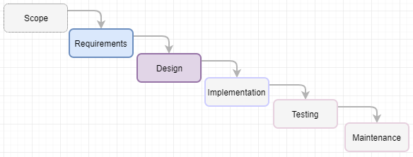
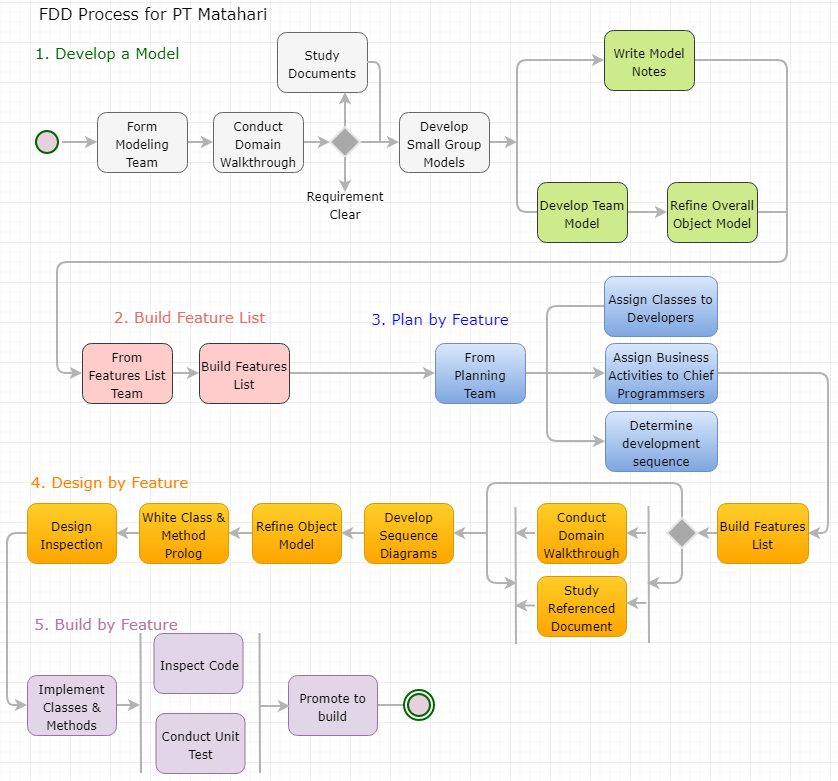
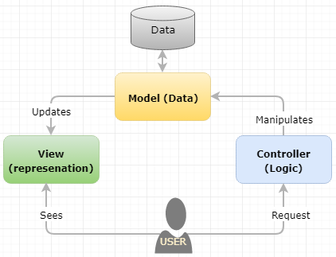
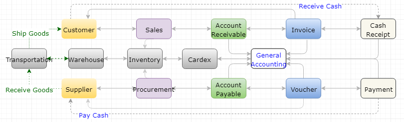
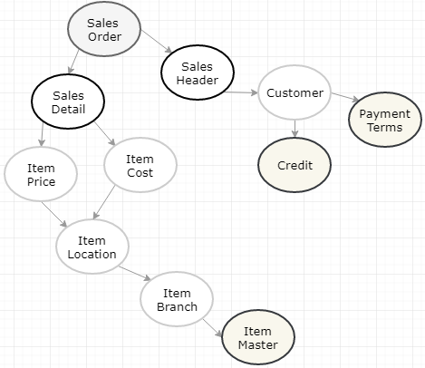
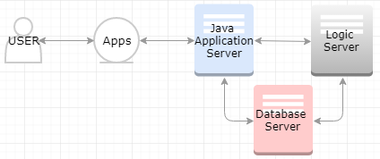
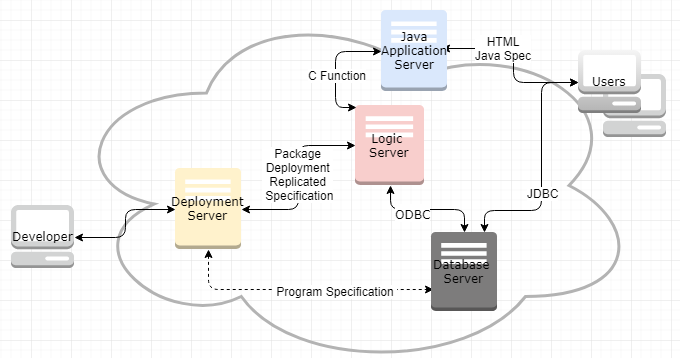
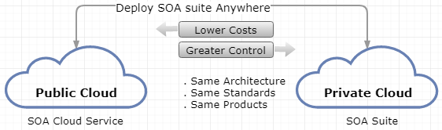

Software Architecture Strategy for PT Matahari
1.2 Goals. 4
2 Software Architecture Evaluation
2.1.1 Software Design. 5
2.1.2 Development Activities. 5
2.2 Software Architecture Strategy Overview.. 6
2.4 Justification. 8
3.1 Process Model for Legacy Systems – Waterfall Model 10
3.2 Process Model Suggestion – Feature-Driven Design Process Model 10
4.1 FDD in the Layered System Architecture. 12
4.2 Feature-Driven Development ERP Modules and Its Components. 12
5 Architectural Design Strategy
5.1 Primary Systems of PT Matahari 16
5.2 System Quality Requirement 17
5.3 Design Pattern – Composite Pattern. 18
6.1 Software Engineering Requirements. 21
6.1.1 Top 10 Requirements. 21
6.1.2 Requirements in Architectural Style Suggested. 21
7 Architecture Strategy Evaluation
7.1.1 Security. 27
7.1.2 Performance. 27
8.1 Software-Defined Network (SDN) 29
8.2 Service-Oriented Architecture (SOA) 30
PT Matahari has over 26 years business in distributing paint product with over 100 employees mainly in Malang in Indonesia. The commercial and domestic demand for paint products are rising in recent years because new regulation mandates to have commercial building painted every five years and the increase of disposable income motivates individual to paint for their home. As a result, new competitors step into this market with better equipped Information Technology (IT) infrastructure and software. It is high time for PT Matahari to have the integrated system to meet expectation from various needs and provide better customer support to retail long term clients as well as potential clients.
It is important for PT Matahari to have software to align the business requirement. The Enterprise Resource Planning (ERP) software enables to plan and forecast the demand and supply using well structured business transaction data. However, well established commerical ERP software is expensive to implement and to maintain it. These software are heavy and too comprehensive which incurs additional cost, let alone, these do not support a country specific requirements – tax calculation, and business convention in Indonesia. Hence, it is imperative to build light ERP which is slimmed down software and tailored for PT Matahari.
The Information Technology (IT) infrastructure in Indonesia has been lagging till recent years because of the geographical peculiarity and highly populated cities across islands. The constraints and limitations give PT Matahari challenges and opportunities at the same time.
There are multiple in-house systems to hold daily transactions since business continuity is main concern for any enterprise. All these systems are scattered in different loose client-server architecture which allows multiple users to access same set of data in the servers. Table 1 represents a brief outline of current systems in PT Matahari.
Table 1. Current Systems
| Requirements | Level |
|---|---|
| Inventory | The usage of inventory is maintained using the advanced functionality of Microsoft Excel and stored in file server |
| Point of Sales | The first generation stand-along Microsoft Point of Sales (POS) system with FAT client interface with SQL Database which is running in Windows 2006 32 bit |
| Financial System | Manual creation of Account Payable based on supplier’s invoice and Account payable using invoice generated from POS system. As a result, both Balance Sheet and Income Statement is a simple and not system generated |
| Address Book Management | Microsoft Access using OLE DB connector to the file server |
| Other Printed and Scanned Files System | Stored in File Server including agreements and confidential records. User access control is done using Windows Directory |
Note: There is no system to control non-monetary information.
There is very limited development activities since most of systems are developed on ad-hoc basis without complying with software system engineering process or, software development life cycle (SDLC). Nonetheless, there is no proper design patterns; it requires high maintenance of systems.
By the advent of IT infrastructure in the region, it is high time for PT Matahari to implement revolutionary software architecture to maximize the benefit of modern technology by integrating highly dispersed systems. This new system should be competitive, efficient, collaborative, scalable, mobile, productive, flexible, and secured. This architecture also need to support planning/forecasting, integrated information, streamlined process and yield better customer satisfaction (workwise software, n.d.).
Figure 1 depicts the transition of software architecture to build streamlines business process.
Figure 1. Software Architecture
On the other hand, it requires transformation in software development methodology. Software Development Life Cycle (SDLC) encompasses software engineering project from beginning to the end. Figure 2 represents the cycle of Software Development, where the end of one project feeds into other project directly (Stephens, 2015).

Figure 2. Software Development Life Cycle
A software architecture is an abstraction of the system which is to define structure; to define behavior of system; by concentrating on important elements; to meet and balance the stakeholder needs; to make concrete decision; to conform architectural style; to influence environment, and to specify a scope of engineering work. Meanwhile, an architectural style is the collection of architectural design decision for the reuse of design, the reuse of code, for the comprehension of system organization, for interoperability, and for visualization (Eeles, 2006).
Table 2 represents two well-known software architectural styles. Object-oriented style is influenced by object oriented programming language, and layered style is commonly used the enterprise solutions to meet the criteria of good software (Taylor et al., 2008).
Table 2. Object-Oriented Style vs. Layered Style
| Object-Oriented Style | Layered Style |
|---|---|
|
|
|
|
|
|
|
|
|
Proper selection of architectural styles meet good software requirements below (Barbin, 2013),
Since the enterprise solution, or software for business, requires all above characteristics, the choice of architectural style is layered style.
This project builds a light ERP software for PT Matahari. ERP software embeds the best business practice in tailoring traditional business model to industry standard. The layered structural style is one of most suitable approach for any enterprise solution with advantage below (Taylor et al., 2008),

Figure 3. Light ERP Layered Style
The light ERP software for PT Matahari is a slimmed down solution using reverse engineering method based on well-established commercial ERP solution for a small enterprise. As design pattern in layered architectural style, 3-tier pattern and Model View Controller (MVC) pattern are suitable to maximize the advantage of layered architecture. This layered architectural style meets loose coupling, high cohesion, separation of concerns, and information hiding to build effective and efficient software between layers and within layer.
The process model for legacy system in PT Matahari follows a typical waterfall model as depicted in figure 4. This model, however, focuses very much on up-front requirements elicitation and analysis. The maintenance work of the existing software for both correction and adaption are not effective let alone it cause additional cost for it.

Figure 4. Waterfall Model
Software development methodology or process model is a framework to plan, structure, and control the process developing a software. This process is mainly concerned with the software development process excluding technical aspect of system. Since the primary goal of software development project is whether we produce high-quality software reasonably close to on time within the budget, it is important to select a right process model to build a light ERP software for PT Matahari.
Feature-Driven Development (FDD) is an iterative and incremental software development methodology intended for use of comprehensive software development (TatvaSoft, 2015). As the name implies, FDD mainly focuses on the feature and aspect of the light ERP software to build. This FDD model builds a list of wanted features at a high level, and then iteratively adds those features to the application.

Figure 5. FDD Phases and Steps
As shown in figure 5, FDD moves forward using five phases: Develop a model; Build a feature list by converting the object model to a feature list; Plan by feature by prioritizing features; Design by feature by collecting similar features within short iterative time frame by converting the object model to a feature list; and Build by feature (Stephen, 2015). Likewise, other Rapid Application Development (RAD) models, the last phase - design and coding take up most of time, and this distinguish FDD from traditional waterfall process model.
Figure 6 represents a typical layer in the light ERP software. Java machine layer, or representation layer represents the attribute of individual application. This layer can access database directly using JDBC or call the logic (business functions) in the application logic layer. Then these business functions call various standard APIs including the instruction on how to access database and represent it in the functions using ODBC middleware. Furthermore, this architecture leaves room for additional interface for the future extension – Applications Interface Services (AIS) server which makes use of the code written in Application logic layer.

Figure 6. Layers in ERP for PT Matahari
ERP is the combination of multiple modules or suites which are working independently to maximize the integration between modules which have distinct attributes and features. Each modules need to support daily transactions for PT Matahari, which transactions are made up of scaled objects or entities. Loosely coupled modules comprises as depicted in figure 7. Each modules contains a specific feature to enable PT Matahari to hold daily transactions.

Figure 7. ERP Architecture
Figure 8 depicts sales order process which comprises the change of states from the beginning to the end including the interface with other module.

Figure 8. Sales Order Process in PT Matahari
Above figures contains both interactive and batch applications where interactive applications can be modeled using a MVC framework. MVC pattern comprises Model (data), View (presentation), and Controller (logic) relationship as depicted in figure 9 (Miessler, 2015). This MVC architectural pattern follows a typical layered architectural style.

Figure 9. MVC Pattern for Interactive Applications
In MVC architecture pattern, a model is instruction on how to manipulate data by calling a master business function. A view is the output of data either manipulated by controller or returned value itself where traditional software represents data using a business view. And a controller defines the interface including how to call the model functions.
Figure 10 depicts a typical transition of inventory, cash, and data when the primary purpose of a light ERP is to record all movement of inventory and cash or synchronize the movement of inventory and cash with data flow. This figure represents an individual module which is independent to others in the highly integrated system structure.

Figure 10. Inventory, Cash, and Data Transition
In this diagram, a sales comprises a sales order header and detail as an object. Sales order has feature of credit limit, payment terms, tax per shipping address in header and checking item availability, fetching item cost, calculate sales price, getting blanket order, agreement information. Actual adaptation of FDD Model for this example can be,
As reviewed, the development of light ERP software is well suited for iterative in basic objects and incremental in relationship of each objects. Furthermore, each objects have individual codes for layers – presentation layer, business logic layer, and data layer.
So far, the choice of architectural style of PT Matahari is a layered style (presentation, business logic, and database), the choice of architectural pattern is an MVC (Model, View, and Controller), and the choice of development process model is a Feature-Driven Development (FDD) to build a light Enterprise Resource Planning (ERP) for PT Matahari. Now it is time to choose the reliable, optimized, and reusable solution to solve common problems may occur in designing a light ERP software – design pattern, which is sitting in the ‘design’ phase of software development life cycle (SDLC) to model the problem. Naturally, it is imperative to choose the solution which supports the quality attributes (QAs) in the design phase of SDLC.

Figure 11. Light ERP
Figure 11 is a slimmed down ERP based on Figure 7 which implements modules in distribution only because the requirement of PT Matahari is a light ERP where the nature of business is importing the paint materials from oversea suppliers and distribute it in Indonesia. This projects focuses on the core features of Inventory Management, Sales Management, and Procurement/Subcontract.
With the design patterns, the quality improves, where tactics are design decisions to balance individual quality attribute concern, whole architecture of system to be more extensible and adaptable. Even when the reusability of pattern is main concern here, the parameters of quality in this design phase are scalability, security, performance, availability, dependability of the system (Barbacci, 2003). These nonfunctional requirements lead to good software design concept to meet loose coupling, high cohesion, high messaging, scalable, low inheritance level, and less complexity. In real implementation, it is important to intertwine multiple design patterns to produce a bigger whole where quality attributes have their tradeoff caused by a certain tactics in table 3 below (Dilruk, 2016).
Table 3. Software Quality Attributes, Tactics, Tradeoffs, and Implementation
| Quality Attribute | Tactics | Tradeoffs | Implementations |
|---|---|---|---|
| Scalability | Distributed System, Maximum Resource Utilization, Load Balancing | Security, Performance | Composite pattern in a layered architecture |
| Security | Prevention, Detection, Reaction using Identification, Authentication, Access Control, Encryption, Hashing, Cryptography | Performance, Usability, Accessibility, Cost | Put security measurement in each layer in the layered system |
| Performance | Maximum Resource Utilization, Parallelism, Message Conversion Avoidance | Security, Availability, Testability, Reliability | Segregation of interface using MVC |
| Availability | Replication, Recovery, Fault Tolerance | Security, Testability, Cost | OS, Database, Middleware, Hardware, and Network Technology |
Software design patterns are categorized into creational patterns, structural patterns, and behavioral patterns which are common aspects in the object-oriented design. To simplify the choice of design pattern, the scope of design pattern stays in object patterns without extending it to class patterns. The composite design pattern which belongs to the structural pattern is a simple way to realize relationship between entities or objects. Likewise, a famous catchphrase “the development of an embryo repeats the revolution of the species,” a composite pattern is that groups of objects should behavior the same as individual objects from within that group. This pattern is useful when the organization has a tree structure of objects where every object has the same interface in building relationship between objects in the organization (GoFPatterns, n.d.).
The composite pattern comprises component, leaf, composite, and client. The simplified picture will be composite (can have other objects underneath) and leaf (last object in a tree) as depicted in Figure 12.

Figure 12. Composite Design Pattern
Sales order as an object can have relationship as depicted in figure 13 using the composite pattern, in turn, sales order can have composite of distribution module in this pattern.

Figure 13. Sales Order Using Composite Pattern
Above figure repeats composites and leafs repeats and adding additional composite or leaf is easy too. This composition allows easier extension in MVC model as each objects have MVC pattern likewise a whole system.
Figure 14 depicts a simplified MVC architecture pattern without having tactics.

Figure 14. MVC Model without Tactics
On the other hand, figure 15 represents same architecture with tactics.

Figure 15. Authorization with Tactics
In this figure, it is easy to put another layer since the architectural style is a layered style. So the first authorization layer adds non-functional attribute for security and availability. Accessing database through JDBC contributes better performance and availability since it bypasses controller layer in logic server. The fourth aspects is implementation of transaction processing to have better integrity for master functions in the system. In this figure, the scalability, security, performance, integrity requirements can be added with ease by using a layered architectural style with MVC pattern. Commonly, the lightweight directory access protocol (LDAP) is a good candidate to have proper access control.
The goal of this project is building a light ERP software with requirements presented in the table 4. The requirements comprise both functional and non-functional requirements which are related with the software architecture.
Table 4. Top 10 Requirements for PT Matahari
| ID | Name | Trace |
|---|---|---|
| F001 | Users must view data in HTML client | T001 |
| F002 | Both control data and business data must be stored in database server | T002 |
| F003 | Business logic must be running in logic server | T003 |
| F004 | Application specification must be marshalled in JAS and allowed interface | T004 |
| F005 | Interactive application must run its specification in JAS and its logic in logic server | T005 |
| F006 | Batch application must be running in the logic sever | T006 |
| F007 | HTML client must fetch data from database server directly | T007 |
| F008 | Interactive application must support, add, update, view, and delete | T008 |
| F009 | All global and control data must be cached | T009 |
| F010 | Major application must support transaction processing | T010 |
In software development life cycle (SLDC), the elicitation and analysis of requirements is the first step, followed by design, implementation, testing, and maintenance. The architecture patterns have to be determined the best solution to solve the requirements listed above. Below describes the relationship between the requirements and the architectural style and pattern reviewed earlier in detail.
Based on the requirements analyzed above, this section reviews how each requirements complies with the structural style and pattern discussed earlier. Both Requirement ID and Trace number are crucial in this table to build useful traceability matrix for successful project.
| Requirement ID | F001 |
|---|---|
| Requirement Name | User must view data in HTML client |
| Requirement Detail | An object is made up of the specification and its function. The specification is marshalled to run in JAS where the functions are running in logic server. The specification deals with how user interfaces the object, which calls function to manipulate data. Figure 16 depicts hardware layer for this requirement. |
| Trace | T001 |

Figure 16. Hardware Layer
| Requirement ID | F002 |
|---|---|
| Requirement Name | Both control data and business data must be stored in database server |
| Requirement Detail | In figure 16, the specification which is XML code, function library, business data, and control data are all sitting in Database Server. Hence, the logic server is the destination of object (specification + function) for the deployment. |
| Trace | T002 |
| Requirement ID | F003 |
|---|---|
| Requirement Name | Business logic must be running in logic server |
| Requirement Detail | Application requires higher integrity requires master business function. Master business function segregates the default, validation, and creation of cache into header and detail. The validation and creation header cache is done using Begin Doc, the validation and creation of detail cache is done by Edit Line, conditionally Edit Doc maintain integrity between header cache and detail cache, then End Doc commits the header cache and detail cache with Transaction Processing. The specification of an object hooks up these functions. |
| Trace | T003 |
| Requirement ID | F004 |
|---|---|
| Requirement Name | Application specification must be marshalled in JAS and allowed interface |
| Requirement Detail | User interface layer is composed objects using GUI development tools which validates user interface and calls functions. Regardless the programming tools used, these specification need serializing to make JAS to understand without parsing the code itself. This interface controls events and the business view to control direct database access and limit the columns to represents. Figure 17 depicts a simplified deployment representation. |
| Trace | T004 |

Figure 17. Deployment
| Requirement ID | F005 |
|---|---|
| Requirement Name | Interactive application must run its specification in JAS and its logic in the logic server |
| Requirement Detail | An object comprises the specification and functions. The specification contains different types of objects (data dictionary, table, business view, form, buttons, and events.) Functions manipulates user input or data stored in database. In this configuration, we call the enterprise server which encompasses both logic server and database server. |
| Trace | T005 |
| Requirement ID | F006 |
|---|---|
| Requirement Name | Batch application must be running in the logic sever |
| Requirement Detail | Where cache is main model to store data temporarily for the interactive applications, the temp file is temporary data repository not to face Memory Allocation problem for long running batch. In this layered system, logic comprises batch and functions. |
| Trace | T006 |
| Requirement ID | F007 |
|---|---|
| Requirement Name | HTML client must fetch data from database server directly |
| Requirement Detail | User can access data in two ways: using business view in the specification layer and through API in business function layer. Model view is done in JAS layer to have better performance and to have better security including proxy user. This requirement enables dynamic query using JDBC. Figure 18 depicts this requirement in detail. |
| Trace | T007 |

Figure 18. Dynamic Query using JDBC
| Requirement ID | F008 |
|---|---|
| Requirement Name | Interactive application must support add, update, view, and delete functionality |
| Requirement Detail | The interactive applications written in GUI development tool contains buttons to manipulate data using business view objects. For simple object, data are manipulated using this buttons, but all major applications calls its master business functions to manipulate its data. From end-user’s point of view, which gives same look and feel with same types of interface. |
| Trace | T008 |
| Requirement ID | F009 |
|---|---|
| Requirement Name | All global and control files must be cached |
| Requirement Detail | To yield better performance and maintain higher concurrency even this can cause dirty read and phantom read in nature. |
| Trace | T009 |

Figure 19. Transaction Processing
| Requirement ID | F010 |
|---|---|
| Requirement Name | Major applications must support transaction processing |
| Requirement Detail | Figure 19 depicts a simplified transaction processing routine across system to maintain higher integrity for critical update based on all-or-nothing. This routine sets the transaction processing for proper rollback. The creation of cache which are made up of header and detail are done before user clicking OK button in any application. |
| Trace | T010 |
Above top 10 requirements make use of a layered architectural style using MVC pattern based on the features in the light ERP software. Each objects includes View, Controller, and Model. Data Model can call additional function which is reusable.
In design phase of SLDC, after requirement gathering and analysis which builds a light ERP software, the preferred framework of architecture was chosen as below,
Even above models and patterns are the best solution to build a light ERP software, the style, pattern, and model have its advantages and disadvantages as below,
Table 5. Pros and Cons of Chosen Model
| Pros | Cons | |
|---|---|---|
| Layered Architecture Style (Suhanov, 2014) |
|
|
| MVC Design Pattern (interServer, n.d.) |
|
|
| FDD Process Model (TatvaSoft, 2015) |
|
|
| Composite Design Pattern |
|
|
In real world, there is no perfect models rather above architecture model is chosen based on well-known commercial ERP software since this project borrows majority of virtue from it.
To compensate the shortfalls in selected architecture, it is important to set its mitigation strategy.
The importance of CIA (Confidentiality, Integrity, and Availability) triad is paramount in any software development project regardless the architectural style and pattern. Figure 20 depicts security mitigation strategy in a layered architecture (Microsoft, n.d.).

Figure 20. Security Mitigation Strategy
In MVC model, the access of data through multiple layer causes performance of application concerns. Figure 21 depicts the opportunity to access database directly from JAS without going through logic server.

Figure 21. Database Access
Continue work on the software architecture strategy document by adding an analysis of the pros and cons of the selected architecture for addressing software engineering requirements in the organization. Alternative approach will be utilizing cache,
Debates on “on premise software is dead” is concise catchphrase on the direction of enterprise solutions move. This norm is commonplace in the realm of enterprise solutions because many multiple billion enterprises mix and matches the software from multiple vendors in Cloud. Furthermore, the advent of software and IT technology including its infrastructure widely open up the doors for emerging technology. Here review Software-Defined Network (SDN), Service-Oriented Architecture (SOA) and Cloud in detail. The transition to these emerging technology and early adaptation possibly gives PT Matahari competitive edge to its competitors.
There are some eye catching approaches and frameworks in network in recent years: Network as a Service (NaaS), Network Functions Virtualization (NFV), Open vSwitch Database (OVSDB) Management Protocol, and Software-Defined Network (SDN) where the importance of security is paramount.
The purpose of this proposal is not to compromise the security vulnerability with proper network congestion control. A typical configuration for SDN is adding layer in between infrastructure layer and application layer to have better control on traffic. Figure 22 depicts the framework of SDN. The benefit of SDN configuration is that it is programmable directly, agile, centrally managed, programmatically configured (Opennetworking, 2017).

Figure 22. SDN Framework
The choice of architectural style for PT Matahari is a layered architecture which enables easy layer when needs arise. Figure 23 represents conceptual architectural approach of Application Interface Services (AIS) server which is additional server based on figure 6.

Figure 23. AIS Layer Addition
SOA, or Service Oriented Infrastructure is the organization of the components of a system. The available features in SOA architecture represents its benefits (and its disadvantage). Available features in this organization are (OpenGroup, n.d.),
One of marketing material on SOA gives better picture as depicted in Figure 24 (Fouad, 2016).

Figure 24. SOA Deployment
Many argue that on premise is dead because of overwhelming dominance of the Cloud across industry, which accelerate business transformation. These transformation aims at faster innovation, improved customer engagement, driving business-process efficiency, and digital transformation. Figure 25 depicts cloud computing stack which encompasses all components of system including hardware (Gupta, 2017).

Figure 25. Cloud Computing Stack
Commonly, the benefits of cloud computing include flexible, efficient, and exposing the enterprise to the more innovative technology. According to IBM (Sauerwalt, n.d.),
SDN, SOA, and the Cloud can be due course for PT Matahari to maintain sustainable enterprise with minimum cost of implementation and maintenance. Figure 26 depicts the view of adaptation of future to come – SOA using Cloud computing to maximize its business capability.

Figure 26. SOA and Cloud